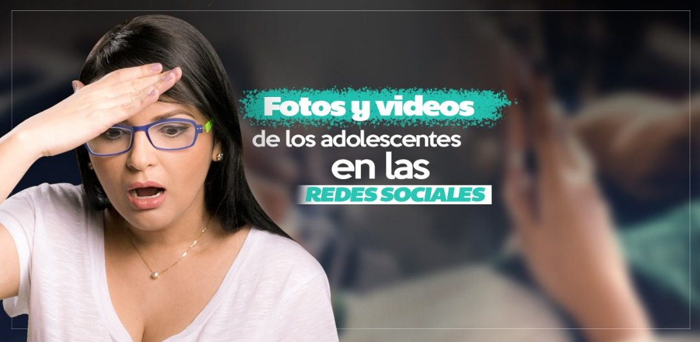

Fotos y videos de los adolescentes en las redes sociales
De la popularidad a los problemas de salud mental
Las redes sociales se han convertido en la plataforma que los adolescentes utilizan para postularse a la popularidad tan ansiada durante esta etapa de la vida, en donde sobresalir por encima de todos es casi que una competencia de supervivencia. En este artículo te explico ¿cómo son los adolescentes en las redes sociales?
Para ser popular en las redes se deben cumplir ciertos requisitos que muchas veces mamá y papá no aprobarían, por lo que muchos adolescentes optan por bloquear a sus padres y familiares en sus redes sociales o en algunos casos tener dos cuentas paralelas, una para su familia y otra para ser popular, esta cuenta paralela donde los padres y familiares son bloqueados, regularmente es pública para tener mayor cantidad de likes y comentarios que le hagan sentir especial, bella o guapo, deseado o deseada.
Hay muchos adolescentes en las redes sociales que muestran sus habilidades como el canto, maquillaje, baile y dotes para la actuación o comediante. De ese tipo de publicaciones no hablaremos hoy, sino que hablaremos las que están vinculadas con la exposición muchas veces de índole sexual que tienen algunos adolescentes, y que en algunos casos empiezan a publicar a partir de los 12 a 13 años.
La exposición de los adolescentes en las redes sociales
La mayoría de las publicaciones de las jovencitas empiezan imitando las poses de sus artistas favoritas o algunas influencers que con frecuencia proyectan una imagen muy sensual. El problema empieza cuando la exposición de su intimidad aumenta con cada publicación para obtener mayor visibilidad, mientras más provocativa sea la foto o video más seguidores tendrá, más likes y comentarios que la hagan sentir deseada, importante.
De esta manera empieza a crear sin darse cuenta una dependencia a la aprobación de los demás, generando problemas de autoestima (necesita la aprobación externa y no considera su propio valor) e identidad (no sabe quién es en realidad ya que sus publicaciones obedecen a un estereotipo que genera seguidores) y en el peor de los casos puede desencadenar estados de trastorno de ansiedad o depresión.
Este tipo de publicaciones genera de una u otra manera daños en la salud mental de las personas que las publican, en situaciones extremas estos daños pueden generar violencia hacia las otras personas o hacia ellos mismos llegando incluso a intentos de suicidio. Al parecer los adolescentes no se dan cuenta los peligros que acarrean publicar cierto tipo de fotos y videos, o lo saben, pero minimizan sus efectos perjudiciales. Lo cierto es que muchas de esas publicaciones son utilizadas para páginas pornográficas o trata de personas y terminan por destruir la reputación de la persona que las publica más allá de las fronteras y de la etapa adolescente.
Extorsión hacia adolescentes en las redes sociales
Otro de los aspectos negativos que se presentan son los casos de extorsión en las redes por parte de adultos o jóvenes, las chicas suelen ser más vulnerables a este tipo de acciones.
Por ejemplo, se presentan casos en los que se les exige enviar fotos o videos desnudas o publicaran fotos o videos falsos diciendo que son ellas, en otras oportunidades tanto chicos como chicas suelen utilizar como soporte este tipo de publicaciones para dañar la reputación de la persona que las publica, ya sea por no poder entablar una relación con la chica o por envidia al no tener la misma atención, también es frecuente que los chicos suelan enviar mensajes obscenos por medio de estas publicaciones, al punto de llegar a ser víctimas de acoso sexual, tanto en las redes como en el colegio.
Por último, este tipo de publicaciones generan muchos más prejuicios sexistas y elevan el machismo, que tanto daño hace de generación en generación. Las adolescentes se muestran en las redes sociales como objeto sexual, se mueven como si su mayor talento fuese tener un trasero grande y moverlo como un trompo, imitan gestos y movimientos de artistas y modelos que sólo proyectan una imagen sexual sin tener en cuenta el daño que le hacen a las nuevas generaciones. Las adolescentes empiezan a enfrentarse a un mundo en donde la imagen lo es todo, asocian la belleza con el deseo y el sexo, precipitando su sexualidad y atrayendo personas que sólo las ven como objeto sexual gracias a sus publicaciones.
Sin embargo, todos estos problemas pueden prevenirse si los padres toman las medidas necesarias, y no me refiero a negarles el uso de las redes sociales porque eso es inconcebible dentro del mundo adolescente actual, Instagram, Facebook, Youtube, Snapshap y Twitter son la principal fuente de comunicación en su vida y a pesar que el uso inadecuado puede generar daños en la salud mental, son pocos los que están dispuestos a no tener presencia por lo menos en una de ellas, porque sencillamente como muchos jóvenes dicen “Si no estás en las redes no existes”.
Lo que los padres pueden hacer con los adolescentes en las redes sociales
La acción más importante es inculcar desde temprana edad el buen uso de las redes sociales.
1. Educar y formar a sus hijos con valores y que comprendan que esos valores deben aplicarse también en las redes sociales, porque todo lo que pasa en el mundo virtual afecta el mundo real.
2. Enseñarles a los hijos cuál es el verdadero valor de las personas y no la falsa aprobación por medio de un “me gusta”.
3. Ser un buen modelo a seguir con el uso de las redes, que nuestros hijos vean como es nuestra presencia online y el uso que le damos a las mismas. Recordar que nuestra conducta es la mayor de las enseñanzas.
4. Hablar con nuestros hijos sobre las redes sociales de forma relajada, sin que ellos sientan que queremos inculcarles miedos y limitarlos, sino que aprendan poco a poco a autorregularse, socializar adecuadamente y tener ciertas normas de seguridad tanto para ellos como para su familia.
5. Siempre se debe chequear el historial de navegación, si encuentras algo indebido reaccionar desde el dialogo afectivo para la toma de conciencia.
6. No porque se lo digas una vez significa que tu hijo ya es consciente de los peligros, debes ser persistente pero no insistente, habla de las experiencias tanto tuyas como de personas conocidas, de noticias, también habla de valores, y ojo siempre en forma anécdota, no de conferencia.
7. Algunos padres tratan de controlar el uso de las redes sociales de sus hijos con aplicaciones como TeenSafe que vincula los celulares de los adolescentes con los de sus padres, y permite la supervisión completa de llamadas telefónicas, correos electrónicos, mensajes de texto, uso de redes sociales y geolocalización. Personalmente sólo recomiendo esto cuando se trata de hijos que están en rehabilitación por consumo de drogas o alcohol. O algunos casos en que la vida de los hijos corre peligro. De resto recomiendo cultivar la relación de confianza con tus hijos.
8. Establecer límites y controles en común acuerdo con los hijos. Es importante que tus hijos comprendan cada una de las decisiones que tomas para educarlos, y en los casos que no lo comprendan pues con el tiempo lo entenderán, no te preocupes. Una manera para que comprendan los límites y controles es dialogándolos y establecerlos junto con ellos. Por ejemplo: pueden llegar a un acuerdo del tipo de fotos que se pueden subir en sus redes y por qué cierto tipo están prohibidas, llevar un seguimiento de las fotos publicadas, los videos, las personas que lo siguen y las que ellos siguen, y muy importante que ellos vayan controlando el tiempo que dedican a las redes, lo ideal es que ellos mismos establezcan sus horarios y los padres los ayuden a cumplir ese horario.
9. Así como es con los padres que sea con los amigos, es importante que los adolescentes también aprendan a proteger su integridad y establezcan límites con los amigos sobre las fotos o videos en los que ellos salen y desean publicar. Así mismo que ellos respeten la integridad de sus amigos y pidan permiso para las publicaciones en las que aparezcan.
10. Propiciar la búsqueda de soluciones o alternativas ante determinadas situaciones, ayudara a tus hijos a tener la confianza necesaria para enfrentar experiencias que en algún momento podrían resultar estresantes.
11. Establecer relaciones de calidad, las relaciones entre los adolescentes cada vez son más superfluas, lo que genera que la red de confianza sea muy endeble, por lo que es importante que ellos aprendan a cultivar las amistades positivas y reforzar los valores que implican como la solidaridad, sinceridad, honestidad, respeto, amor.
12. Enseñarles a nuestros hijos a identificar el tipo de personas desean en su vida, y cuál es el tipo de personas atraen con sus publicaciones. Por ejemplo: muchas adolescentes desean tener una pareja que las valore y respete, pero publican fotos exhibiéndose como un objeto sexual y obtienen la atención contraria a lo que desean.
13. Explicar a los hijos que las fotos que suben sus artistas favoritos e influencers obedecen a cierto tipo de marketing que nada tiene que ver con la vida de sus hijos y en ocasiones tampoco refleja lo que sienten esos artistas. Muchas veces esos mismos artistas terminan padeciendo depresión por sentir que su vida está basada en un mundo de apariencias. El explicarles esta realidad a los hijos puede evitar en ellos sentimientos de frustración y tristeza, ya que dejan de idealizar y desear ese tipo de vida que se muestra en las redes y que muchas veces no obedece a la realidad.
14. Promover actividades de distracción fuera de las redes sociales, como practicar algún deporte, artes plásticas, baile, canto, lectura, juegos de mesa.
15. Retarles a divertirse sin publicar lo que hacen y por supuesto que los padres en reuniones familiares se tomen fotos sólo para los álbumes familiares y no para las redes.
16. Fortalecer la autoestima y seguridad de sus hijos, para que poco a poco aprendan a manejar las críticas y no caer en la necesidad de hacer publicaciones solo para tener seguidores y comentarios de aprobación.
Para finalizar, una vez más, quiero enfatizar que lo realmente importante en la educación de los adolescentes es que es que los padres establezcan una comunicación efectiva y la confianza con sus hijos, la comprensión y el respeto mutuo siempre generará empatía y el amor fluirá como el mayor soporte ante cualquier adversidad, incluso cuando se presentan problemas con los adolescentes en las redes sociales.